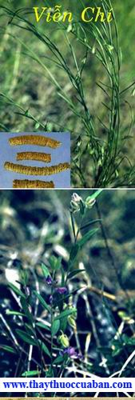

Tên khác:
Tên Hán Việt: Vị thuốc Viễn chí còn gọi Khổ viễn chí (Trấn Nam Bản Thảo), Yêu nhiễu, Cức quyển (Nhĩ Nhã), Nga quản chí thống, Chí nhục, Chí thông, Viễn chí nhục, Chích viễn chí, Khổ yêu, Dư lương, A chỉ thảo, Tỉnh tâm trượng (Trung Quốc Dược Học Đại Từ Điển).
Tên khoa học: Polygala tenuifolia Willd
Họ khoa học: Họ Viễn chí (Polygalaceae).
Cây viễn chí
(Mô tả, hình ảnh cây viễn chí, phân bố, thu hái, thành phần hóa học, tác dụng dược lý...)
Mô Tả:

Cây viễn chí là cây thuốc quý. Cây Viễn chí Polygala japonica Houtt. còn gọi là nam Viễn chí, hay Tiểu thảo. Cây thảo, cao 10-20cm. Cành có ngay từ gốc. Cành nhỏ hình sợi mọc lan ra, trên có lông mịn. Lá mọc so le, nhiều dạng: lá phía dưới hình bầu dục, rộng 4-5mm; lá phía trên hình dải, đầu nhọn, dài 20mm, rộng 3-5mm, mép lá cuốn xuống mặt dưới. Hoa mọc thành chùm gầy, ngắn. Hoa xanh nhạt ở dưới, trắng ở giữa, tím ở đỉnh. Quả nang, nhẵn, hình bầu dục. Cây này mọc hoang ở Bắc Thái, Thanh Hóa, Nam Hà.
Cây Viễn chí Polygala sibirica L. Cây thảo, sống lâu năm. Đường kính thân 1-6mm. Lá phía dưới nhỏ hơn, hình mác, ở cả hai mặt đều có lông nhỏ, mịn. Hoa mọc thành chùm, dài 3-7cm. Cánh hoa màu lam tím.
Phân bố địa lý:

Cây này mọc nhiều ở miền Trung (Nghệ Tĩnh).
Vị Viễn chí ta còn nhập nội. Nó là rễ phơi khô của cây Viễn chí Polygala sibirica L., hoặc của cây Viễn chí Polygala tenuifolia Willd.

Ở Việt Nam có nhiều loài Viễn chí như Polygala japonica Houtt., Polygala sibirica L... nhưng chúng chưa được khai thác.
Thu hoạch:

Vào mùa xuân, thu đàolên, bỏ thân tàn, rễ con và đất, phơi cho vỏ hơi nhăn, rút bỏ lõi gỗ, phơi khô là được.
Phần dùng làm thuốc:

Rễ khô (Radix Polygalae). Thứ ống to, thịt dầy, bỏ hết lõi gỗ là thứ tốt.
Mô tả dược liệu:

Viễn chí hình ống dài, cong, dài 3-13cm, đường kính 0,3 – 1cm. Vỏ ngoài mầu vàng tro, toàn thể có đường nhăn ngang và vân nứt tương đối dầy và lõm sâu hoặc có vân dọc nhỏ và vết rễ nhánh như cái máng nhỏ. Dòn, dễ bẻ gẫy, mặt cắt ngang mầu trắng vàng, ở giữa rỗng. Hơi coa mùi, vị đắng, hơi cay, nhai có cảm giác tê cuống họng (Dược Tài Học).
Bào chế:

+ Bỏ lõi, sao lên dùng (Đông Dược Học Thiết Yếu).
+ Chích Viễn chí: Lấy Cam thảo cho vào nồi, đổ thêm nước, nấu bỏ bã, cho Viễn chí vào (Cứ 5kg Viễn chí dùng 100g Cam thảo), nấu vừa lửa cho hút hết nước cốt Cam thảo, lấy ra để khô là được (Dược Tài Học).

Bảo quản:
Để nơi thoáng gió, khô ráo.
Thành phần hóa học:
+ Tenuigenin A, B Chou T Q và cộng sự, Am Pharm Assoc Sci Ed 1947, 36: 241).
+ Tenuifolin (Pelletier S W và cộng sự, Tetrahydron 1971, 27 (19): 4417).
+ Onjisaponin A, B, C, D, E, F, G (Sakuma S và cộng sự, Pharm Bull 1981, 29 (9): 2431).
+ Tenuifoliside A, B, C, D và a-D- (3-O-Sinapoyl) – Fructofuranosyl-a-D- (6-O- Sinapoyl) –Glucopyranoside (Ikeya Y và cộng sự, Chem Pharm Bull, 1991, 39 (10): 2600).
+ Tenuifoliose A, B, C, D, E, F (Miyase Y và cộng sự Chem Pharm Bull 1991, 39 (11): 3082).
Tác dụng dược lý:

+Thuốc có tác dụng hóa đờm rõ, thành phần hóa đờm chủ yếu là ó vó re Cơ chế hóa clam của thuốc có thế do thuốc kích thích lên niêm mạc bao tử gây phản xạ tăng tiết ở phế quản(Trung Dược Học).
+ Toàn bộ Viễn chí gây ngủ và chống co giật (Trung Dược Học).
+ Chất Senegi có tác dụng tán huyết, phần vỏ mạnh hơn phần gỗ. Viễn chí có tác dụng hạ áp (Trung Dược Học).
+ Cồn chiết xuất Viễn chí có tác dụng in vitro ức chế vi khuần gram dương, trực khuẩn lỵ, thương hàn và trực khuẩn lao ở người (Trung Dược Học).
+ Saponin Viễn chí kích thích dạ dày gây buồn nôn vì thế không nên dùng đối với những bệnh nhân viêm loét dạ dày (Trung Dược Học).
+Trên súc vật thực nghiệm, thuốc cho uống hoặc chích tĩnh mạch đều có tác dụng kích thích tử cung có thai hay không đều như nhau (Trung Dược Học).
Độc tính:
+ Liều độc LD50 của vỏ rễ Viễn chí cho chuột nhắt uống là 10.03 ± 1.98g/kg. Liều LD50 toàn rễ là 16,95 ± 2.01g/kg mà rễ bỏ lõi gỗ đi dùng đến 75g/kg thì gây tử vong (Châu Lương Kiên, Sơn Tây Y Dược 1973 (9): 52).
Vị thuốc viễn chí
Tính vị:
+ Vị đắng, tính ôn (Bản Kinh).
+ Không độc (Biệt Lục).
+ Vị dắng, hơi cay, tính ôn (Bản Thảo Kinh Sơ).
+ Vị chua, hơi cay, tính bình (Y Học Trung Trung Tham Tây lục).
+ Vị đắng, tính ôn, không độc (Trung Quốc Dược Học Đại Từ Điển).
+ Vị đắng, cay, tính ôn (Trung Dược Đại Từ Điển).
Quy kinh:
. Vào kinhThận, phần khí (Thang Dịch Bản Thảo).
. Vào kinh Tâm, Can, Tỳ (Trấn Nam Bản Thảo).
. Vào kinh Tâm, Thận (Trung Dược Đại Từ Điển).
+ Vào kinh Tâm, Thận (Trung Dược Đại Từ Điển).
Tác dụng:
+ Bổ bất túc, trừ tà khí, lợi cửu khiếu, thính nhĩ, minh mục, cường chí (Bản Kinh).
+ Giải độc Thiên hùng, Phụ tử (Bản Thảo Kinh Sơ).
+ Định Tâm khí, giải kinh quý, ích tinh (Biệt Lục).
+ An thần, ích trí, khứ đờm, giải uất (Trung Dược Đại Từ Điển).
Chủ trị:
+ Trị ho nghịch thương trung (Bản Kinh).
+ Trị tâm thần hay quên, kiên tráng dương đạo (Dược Tính Luận).
+ Trị thận tích, bôn đồn (Thang Dịch Bản Thảo).
+ Trị lo sợ, hay quên, mộng tinh, Di tinh, mất ngủ, ho nhiều dờm, mụn nhọt, ghẻ lở (Trung Dược Đại Từ Điển).
Liều dùng:
4 – 10g. Dùng ngoài tùy dùng.
Ứng dụng lâm sàng của vị thuốc viễn chí
Trị tâm thống lâu ngày:
Viễn chí (bỏ lõi), Xương bồ (thái nhỏ) đều 40g. tán bột. Mỗi lần dùng 12g, nước 1 chén, sắc còn 7 phần, bỏ bã, uống ấm (Viễn Chí Thang – Thánh Tế Tổng Lục).
Trị ung thư, phát bối, nhọt độc:
Viễn chí (bỏ lõi), gĩa nát. Rượu I chén, sắc chung, lấy bã đắp vết thương (Viễn Chí Tửu – Tam Nhân phương).
Trị họng sưng đau:
Viễn chí nhục, tán nhuyễn, thổi vào, đờm sẽ tiết ra nhiều (Nhân Trai Trực Chỉ phương).
Trị não phong, đầu đau không chịu được:
Viễn chí (bỏ lõi). Tán nhuyễn. Mỗi lần dùng 2g. lấy nước lạnh ngậm trong miệng rồi thổi thuốc vào mũi (Viễn Chí tán – Thánh Tế Tổng Lục).
Trị khí uất hoặc cổ trướng:
Viễn chí nhục 160g (sao với trấu). Mỗi lần dùng 20g, thêm Gừng 3 lát, sắc uống (Bản Thảo Hối Ngôn).
Trị tiểu đục, nước tiểu đỏ:
Viễn chí ½ cân (ngâm nước Cam thảo, bỏ lõi), Phục thần (bỏ gõ), Ích trí nhân đều 80g. tán bột. Lấy rượu chưng với miến làm hồ, trộn thuốc bột làm thành viên, to bằng hạt Ngô đồng lớn. Mỗi lần uống 50 viên với nước Táo sắc (Viễn Chí hoàn – Chu Thị Tập Nghiệm Y Phương).
Trị vú sưng (suy nhũ):
Viễn chí chưng với rượu, uống, bã đắp vào vết thương (Thần Trân phương).
Trị thần kinh suy nhược, hay quên, hồi hộp, mơ nhiều, mất ngủ:
Viễn chí (tán). Mỗi lần uống 8g với nước cơm, ngày 2 lần (Thiểm Tây Trung Thảo Dược).
Trị tuyến vú viêm, tuyến vú u xơ:
Tác giả Hoàng Sĩ Tiêu dùng Viễn chí 12g, thêm 1 5ml rượu 600 ngâm 1 lúc, cho nước 1 chén, đun sôi 15-20 phút, lọc cho uống. Trị 62 ca tuyến vú viêm cấp, có kết qủa (Thông Tin Tân Y Dược Quảng Châu 1973, 65) và Tuyến Vú U Xơ 20 ca đều khỏi (Trần Phú, Trung Y Dược Học Học Báo 1977, 1: 48).
Trị âm đạo viêm do trùng roi:
Viễn chí tán bột, thêmGlycerine làm thành thuốc đạn (Đặt vào âm đạo), mỗi viên có hàm lượng thuốc sống là 0,75g. Trước khiđặt thuốc, dùng bài thuốc nước rửa phụ khoa: (Ngải diệp, Xà sàng tử, Khổ sâm, Chỉ xác,đều 15g, Bạch chỉ 9g), sắc lấy nước để xông và rửa âm hộ.Đặt thuốc vào âm đạo mỗitối 1 lần. Trị 225ca, sau 3 - 12 lần, hết triệu chứng và kiểm tra trùng roi âm tính có 193 ca khỏi, tỉ lệ 85,8% (Cao Tuệ Phương, Trung Y Tạp Chí 1983, 4: 40).
Trị suy nhược thần kinh do tâm huyết kém có triệu chứng mất ngủ hay quên, hồl hộp, mơ nhiều:
Viễn chí, Phục linh đều 10g, Xương bồ 3g, sắc nước uống (Định Chí Hoàn – (Lâm Sàng Thường Dụng Trung Dược Thủ Sách).
Trị suy nhược thần kinh do tâm huyết kém có triệu chứng mất ngủ hay quên, hồl hộp, mơ nhiều:
Đảng sâm, Viễn chí, Mạch môn, Phục linh đều 10g, Cam thảo 3g, Đương quy, Bạch thược, Sinh khương, Đại táo đều 10g, Quế tâm 3g, sắc, thêm bộtQuế tâm vào, hòa uống (Viễn Chí Hoàn - Lâm Sàng Thường Dụng Trung Dược Thủ Sách).
Trị suy nhược thần kinh do tâm huyết kém có triệu chứng mất ngủ hay quên, hồl hộp, mơ nhiều:
Quy bản, Long cốt, Viễn chí,đều 10g, Xương bồ 3g, sắc uống (Chẩm Trung Đơn- Lâm Sàng Thường Dụng Trung Dược Thủ Sách).
Trị phế quản viêm mạn, ho đờm nhiều:
Viễn chí, Trần bì, Cam thảo đều 3g, sắc uống(Lâm Sàng Thường Dụng Trung Dược Thủ Sách).
Trị phế quản viêm mạn, ho đờm nhiều:
Viễn chí 8g, Cam thảo, Cát cánh đều 6g, sắc uống (Sổ Tay Lâm Sàng Trung Dược).
Trị tuyến vú sưng đau:
Viễn chí, tán bột, hòa rượu uống hoặc chưng cách thủy uống,dùng một ít hòa với rượu đắp (Lâm Sàng Thường Dụng Trung Dược Thủ Sách).
Tham khảo:
Lưu ý khi dùng viễn chí
+ Dùng dơn phương (độc vi) Viễn chí trị tất cả các chứng ung thư phát bối do thất tình uất ức, dùng Viễn chí sắc uống, bã đắp ngoài đều khỏi cả(Dược Phẩm Vậng Yếu).
+ Viễn chí chạy vào Thận, chủ trị của nó tuy nhiều nhưng tóm lại không ngoài công dụng bổ Thận. Viễn chí không phải là thuốc riêng của Tâm mà làm cho mạch chỉ bổ tinh, trị hay quên vì tinh và chí đều tàng ở Thận. Tinh hư thì chí suy, không đạt lên Tâm dược cho nên hay quên. Sách Linh Khu ghi: Thận tàng tinh, tinh hợp chí, Thận thịnh mà không ngăn được thì tổn thương, hay quên. Gười có chứng hay quên là vì khí ở trên không đủ, khí ởdưới có thừa, trường vị thực mà Tâm hư thì vinh vệ sẽ lưu trệ xuống dưới lâu mà không có lúc nào đi lên, cho nên hay quên. Hơn nữa, trong mùi vị của Viễn chí có vị cay cho nên hạ được khí mà chạy đến kinh quyết âm. Sách Nội kinh ghi: Dùng vị cay để bổ là ý nghĩa thủy với mộc cùng một nguồn gốc mà muôn đời chưa ai nói ra được(Dược Phẩm Vậng Yếu).
+ Sở dĩ Viễn chí trị được chứng mất ngủ vì Thận tàng chí, Tâm thận không giao thì chí không định mà thần không yên. Viễn chí thông được Thận khí lên đến Tâm, khiến cho thủy ở trong Thận lên giao tiếp với Tâm, tạo thành Thủy Hỏa Ký tế. Còn trị ho và mụn nhọt là do công dụng lợi khiếu, long đờm. Trước kia Viễn chí đa số được dùng làm thuốc an thần, gần đây phần lớn dùng trị ho nghịch lên. Dùng vị đắng để tiết, lấy ôn để thông, có thể trị chứng ho nghịch thuộc hàn ẩm (Đông Dược Học Thiết Yếu).
+ Viễn chí sống có tác dụng khử đàm, khai khiếu mạnh. Viễn chí mà chích thì độc tính giảm, vị khí kém cũng dùng được. Viễn chí tẩm mật, sao, thìtính nhuận, tác dụng an thần tốt. Viễn chí tính ôn, táo, uống trong kích thích mạnh vì vậy, đàm nhiệt thực hỏa, bao tử tá tràng loét cần thận trọng. Nếu không dùng với Chích Cam thảo sắc uống dễ gây nôn, buồn nôn(Sổ Tay Lâm Sàng Trung Dược).
Kiêng kỵ:
+ Sợ Tề tào (Dược Tính Luận).
+ Viễn chí sợ Trân châu, Lê lô, Tề tào (Trung Quốc Dược Học Đại Từ Điển).
+ Kinh Tâm có thực hỏa, phải dùng chung với Hoàng liên (Đông Dược Học Thiết Yếu).
+ Có thực hỏa, kiêng dùng (Lâm Sàng Thường Dụng Trung Dược Thủ Sách).
Nơi mua bán vị thuốc VIỄN CHÍ đạt chất lượng ở đâu?
Trước thực trạng thuốc đông dược kém chất lượng, nguồn gốc không rõ ràng,... xuất hiện tràn lan trên thị trường, làm ảnh hưởng tới hiệu quả điều trị cũng như ảnh hưởng tới sức khỏe của bệnh nhân. Việc lựa chọn những địa chỉ uy tín để mua thuốc đông dược là rất quan trọng và cần thiết. Vậy khách hàng có thể mua vị thuốc VIỄN CHÍ ở đâu?
VIỄN CHÍ là vị thuốc nam quý, được sử dụng rộng rãi trong YHCT. Hiện tại hầu hết các cửa hàng thuốc đông dược, phòng khám đông y, phòng chẩn trị YHCT... đều có bán vị thuốc này. Tuy nhiên người mua nên chọn những địa chỉ có uy tín, đảm bảo chất lượng, có giấy phép hoạt động để mua được vị thuốc đạt chất lượng.
Với mong muốn bệnh nhân được sử dụng những loại dược liệu đúng, chất lượng tốt, phòng khám Đông y Nguyễn Hữu Toàn không chỉ là đia chỉ khám chữa bệnh tin cậy, uy tín chất lượng mà còn cung cấp cho khách hàng những vị thuốc đông y (thuốc nam, thuốc bắc) đúng, chuẩn, đạt chuẩn chất lượng. Các vị thuốc có trong tiêu chuẩn Dược điển Việt Nam đều được nghành y tế kiểm nghiệm đạt chất lượng tiêu chuẩn.
Vị thuốc VIỄN CHÍ được bán tại Phòng khám là thuốc đã được bào chế theo Tiêu chuẩn NHT.
Giá bán vị thuốc VIỄN CHÍ tại Phòng khám Đông y Nguyễn Hữu Toàn: 800.000vnd/1kg
Tùy theo thời điểm giá bán có thể thay đổi.
+ Khách hàng có thể mua trực tiếp tại địa chỉ phòng khám: Cơ sở 1: Số 481 lô 22 Lê Hồng Phong, Phường Gia Viên, Thành phố Hải Phòng
+ Mua trực tuyến: Thuốc được chuyển qua đường bưu điện. Khi nhận được thuốc khách hàng thanh toán tiền COD.
Tag: cay Vien chi, vi thuoc Vien chi, cong dung Vien chi, Hinh anh cay Vien chi, Tac dung Vien chi, Thuoc nam
Thaythuoccuaban.com Tổng hợp
*************************